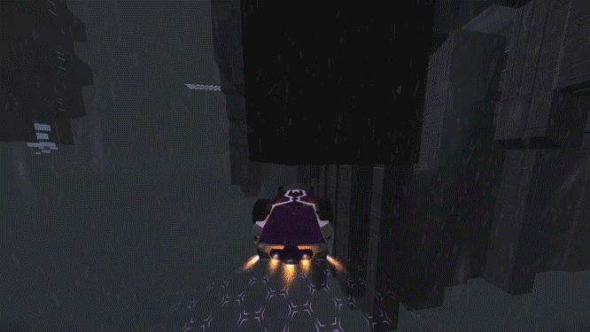
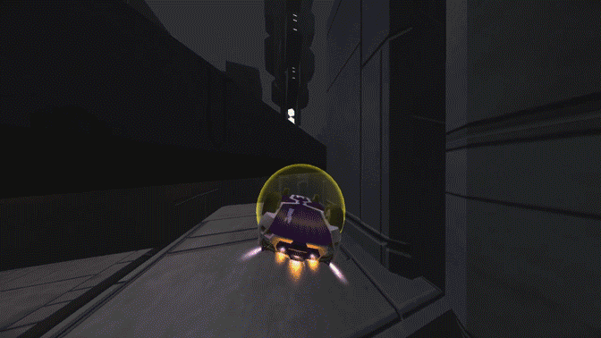
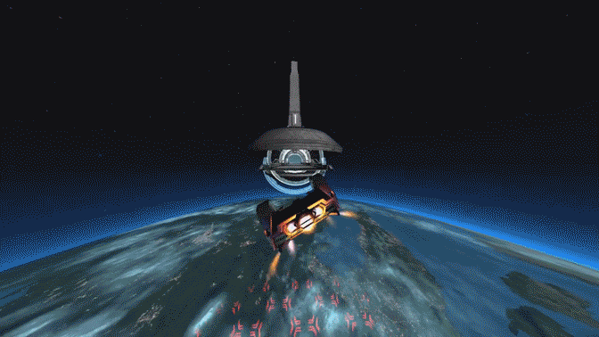
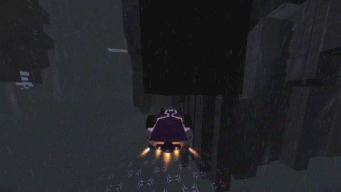
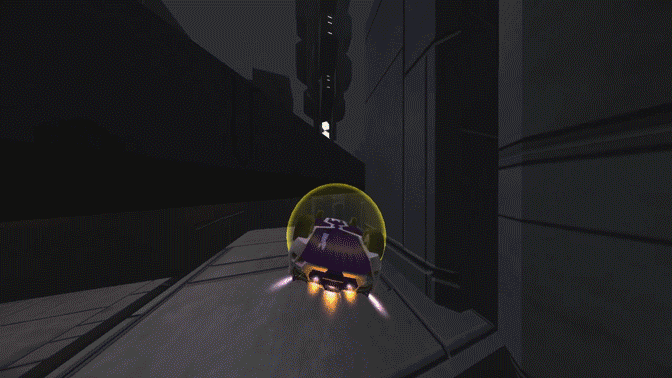
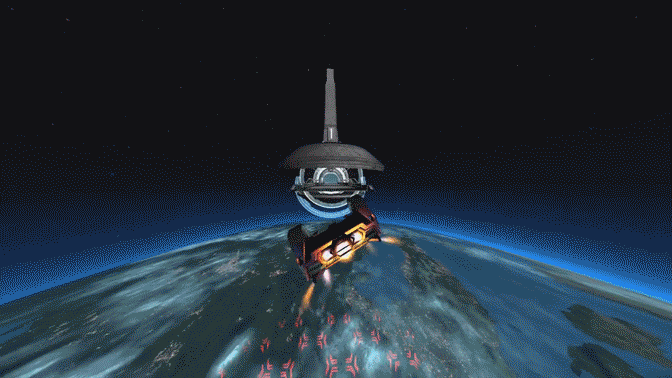

A Guide To Most Distance Mechanics
> Magnet Boosting
So one of the mechanics of this game that allows you to ride walls and ceilings is that your wheels will magnetize toward surfaces that they are close to. This mechanic can be used to go faster, specifically near a ceiling. For some reason, while being in the state of being magnetized to a ceiling, you often move a little faster. Using the magnet properties of the wheels for this purpose of speed is called magnet boosting.
It looks like this.


Here is an overly long magnet boost, and then its speed compared to no magnet boosting.


As you can see, magnet boosting involves balancing your downward force with the upward magnet force to prolong the exposure to the magnet force as long as possible. It is really precise, but can reward small, but significant, reductions in times if you can pull it off. It is mostly seen right before landing on a ceiling, but it can be done with geometry that you don't land on as well. The thing is in cases with geometry that you don't land on, you normally would go for a thruster reset off of them rather than a magnet boost, since both are about as precise to pull off, and the thruster reset rewards more speed. Sometimes just going for and failing a thruster reset can reward a small magnet boost anyways for just getting close to a surface.
It is worth noting that the wheel magnet force varys in power. The faster your velocity, the more powerful the wheel magnet force is, and the slower your velocity, the less powerful it is. At no velocity, wheel magnets straight up don't work. The velocity doesn't have to be in any specific direction to contribute to the wheel magnets either. You can even have an overall velocity that points away from the surface that the wheels are magnetizing towards and the velocity will still count towards increasing the wheel magnet power.
It looks like this.


Here is an overly long magnet boost, and then its speed compared to no magnet boosting.

As you can see, magnet boosting involves balancing your downward force with the upward magnet force to prolong the exposure to the magnet force as long as possible. It is really precise, but can reward small, but significant, reductions in times if you can pull it off. It is mostly seen right before landing on a ceiling, but it can be done with geometry that you don't land on as well. The thing is in cases with geometry that you don't land on, you normally would go for a thruster reset off of them rather than a magnet boost, since both are about as precise to pull off, and the thruster reset rewards more speed. Sometimes just going for and failing a thruster reset can reward a small magnet boost anyways for just getting close to a surface.
It is worth noting that the wheel magnet force varys in power. The faster your velocity, the more powerful the wheel magnet force is, and the slower your velocity, the less powerful it is. At no velocity, wheel magnets straight up don't work. The velocity doesn't have to be in any specific direction to contribute to the wheel magnets either. You can even have an overall velocity that points away from the surface that the wheels are magnetizing towards and the velocity will still count towards increasing the wheel magnet power.